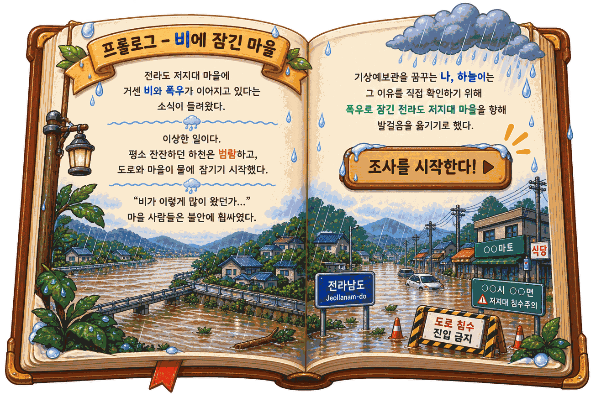
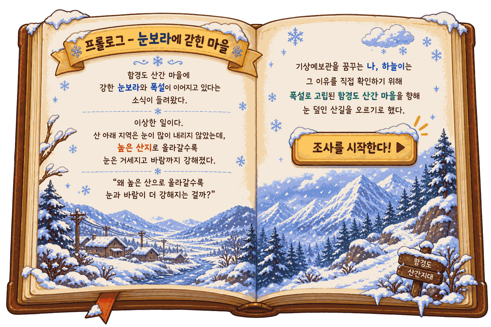
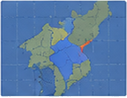

🔧 관리자
🌤️ 날씨 친구
조작법
← → 또는 A / D · 좌우 이동
Shift · 달리기
Space · 점프
E · 조사 / 대화
Tab 또는 I · 기상수첩
✦ 표시 · 살펴볼 곳
태백산맥 서쪽에서 동쪽으로 산을 넘으며, 만나는 사람과 대화하고 주변을 조사한다. 관측 지점 3곳(영서·능선·영동)에서 기온·습도·풍속·풍향을 측정→기록하면, 산을 넘은 바람이 어떻게 변하는지 기상수첩에서 비교할 수 있다.
함께 산을 넘을 친구
둘 다 이름은 '하늘이' — 기상예보관이 꿈인 학생 등산가

남학생 하늘이

여학생 하늘이

날씨수첩 · 팔도 지도

{{ r.mark }}
{{ r.tipText }}
{{ lockToast }}
예보관 수첩
하늘이
어린이 예보관 후보
팔도의 날씨 비밀을 풀고 도장 9개를 모으면 전국 예보관 시험이 열린다.
모은 도장
{{ stampCount }} / 9
코인
💰 {{ coins }}
▶ 다음 목적지: {{ nextRegionName }}
{{ nextRegionHint }}

강원 · 태백산맥
무엇을 해볼까?

🥾 탐험 시작
태백산맥을 직접 넘으며 산불의 원인을 찾는 이야기 모험을 떠나요.
모험 떠나기 ▶

🌦️ 기상 실험실
습도·바람·기온·비를 직접 바꿀서, 강원의 날씨와 산불 위험이 어떻게 달라지는지 알아봐요.
실험실 열기 ▶
전라 · 마을 침수를 막아라
무엇을 해볼까?
🥾 비구름 추적
서해안에서 내륙까지, 물이 차오르는 길을 따라가며 관측해요.
출발하기 ▶
🌊 침수위험 실험실
강수·누적·하천 수위·땅 상태를 바꿔 침수 위험을 확인해요.
실험실 열기 ▶

🪣 빗물통 실험
비의 세기와 내리는 시간을 바꿔 보세요
🌧️ 비의 세기
{{ bkStrWord }}
이슬비집중호우
⏱️ 내리는 시간
{{ bkHourWord }}
1시간8시간
💡 약한 비 + 긴 시간도 꼭 해 보세요. 세게 내리는 것만 위험한 게 아니에요.
🔬 {{ bkHintText }}
넘침
{{ bkWater }}%
{{ bkVerdict }}
✅ 알아낸 것: 통에 찬 물은 비의 세기 × 내린 시간으로 정해져요. 약한 비도 오래 내리면 통이 넘칩니다. 그래서 침수 위험은 지금 비 세기만이 아니라 지금까지 쌓인 양(누적 강수량)으로 봐야 해요.
🌊 침수위험 실험실
값을 바꿔 전라의 여름비를 만들어 보자
침수 위험도
{{ flRisk }}
{{ flLevel }}
{{ flScene }}
⚠ {{ a.text }}
조절판
🌧️ 시간당 강수량{{ flRateLabel }}
🪣 누적 강수량{{ flAccumLabel }}
📅 최근 3일 강수{{ flRecentLabel }}
🌊 하천 수위{{ flRiverLabel }}
비의 양·누적·지면 상태가 하천 수위를 만들어요 · {{ flRiverWarn }}
🟫 지면 상태
🛰️ 실제 기상 기록 불러오기
버튼을 누르면 그날의 실측값이 조절판에 그대로 들어가요.
출처: 기상청 종관기상관측(ASOS) 시간·일자료
출처: 기상청 종관기상관측(ASOS) 시간·일자료
{{ flCaseLabel }}
{{ flCaseNote }}
{{ t.label }}
📢 어디에 먼저 경보를 보낼까?
방송 회선은 하나뿐입니다. 수첩의 자료를 보고 가장 위험한 한 곳을 고르세요.
내 관측
시간당
누적
습도
풍향
{{ r.loc }}
{{ r.rate }}
{{ r.accum }}
{{ r.hum }}
{{ r.dir }}
{{ t.icon }}
{{ t.name }}
{{ t.land }}
시간당{{ t.rate }}
누적{{ t.accum }}
하천 수위{{ t.river }}
💡 {{ pickHint }}
경보가 제때 전해졌다!
하천 주변 마을 사람들이 물이 넘치기 전에 대피했어요.
기상수첩 — 세 지점 비교
위치
시간당
누적
습도
풍향
{{ r.loc }}
{{ r.rate }}
{{ r.accum }}
{{ r.hum }}
{{ r.dir }}
{{ jcCompare }}
하천 주변 마을 침수 위험도
{{ jcLevel }}
{{ jcRisk }} / 100 · {{ jcSceneLine }}
⚠ {{ a.text }}
대응 기록
걸린 시간: {{ jcTime }}
등급: {{ jcTier }}
용돈: {{ jcMoney }}
등급: {{ jcTier }}
용돈: {{ jcMoney }}
🏅 신속 경보 배지 획득!
💧
학습노트 — 집중호우와 침수
시간당 강수량은 지금 이 순간 얼마나 세게 오는지, 누적 강수량은 처음부터 지금까지 쌓인 전부다. 침수는 누적이 결정한다.
땅은 물을 먹을 수 있는 양이 정해져 있다. 이미 물을 잔뜩 먹은 땅에 비가 더 오면, 그 물은 그대로 하천으로 흘러 수위를 끌어올린다.
그래서 비가 그친 뒤에도 하천 수위는 한동안 계속 오른다. 상류에 내린 비가 시간이 걸려 하류로 내려오기 때문이다.
비가 내린다
땅이 물을 먹는다
땅이 물을 먹는다
땅이 배부르면
물이 흘러넘친다
물이 흘러넘친다
하천으로 모인다
수위 상승 → 침수
수위 상승 → 침수
📏 기상청 기준 — 3시간 강수량 60mm 이상 또는 12시간 110mm 이상이면 호우주의보, 3시간 90mm 이상 또는 12시간 180mm 이상이면 호우경보.
예보관의 한 줄: “비가 그쳤다고 안심하면 안 된다. 물은 언제나 늦게 도착한다.”
전라 날씨수첩
전라 · 집중호우와 침수
💧
물방울 도장
전라 날씨수첩에 물방울 도장이 찍혔다!
마을 사람들이 물이 넘치기 전에 안전한 곳으로 대피했어요.
마을 사람들이 물이 넘치기 전에 안전한 곳으로 대피했어요.
👢 기념품 — 물방울 장화
보관함에서 장착할 수 있어요
보관함에서 장착할 수 있어요
함경 · 눈보라에 갇힌 마을
무엇을 해볼까?
🥾 구조 출동
눈보라를 뚫고 북쪽 고지대로 올라가 고립된 마을을 찾아가요.
출동하기 ▶
🌨️ 폭설·한파 실험실
기온·눈·바람·적설을 바꿔 위험도가 어떻게 오르는지 확인해요.
실험실 열기 ▶

팔도기상뉴스
● LIVE
오늘 06:20 · 함경도 산간
기상 속보
밤사이 폭설·강풍
산간마을 도로 전면 통제
산간마을 도로 전면 통제
밤새 많은 눈이 내리고 강한 바람이 불면서 고지대 마을로 들어가는 길이 끊겼습니다. 마을에는 아직 사람들이 남아 있습니다.
현장의 예보관 하늘이가 해안에서 출발해 북쪽 고지대까지 직접 관측하며 올라갑니다.
오늘의 임무
① 해안·산지·고지대 세 곳에서 기온·풍속·적설·풍향을 관측한다
② 세 곳의 값을 비교해 왜 여기만 이렇게 심한지 알아낸다
③ 마을에 도착해 오늘 밤의 위험 등급을 판단한다
② 세 곳의 값을 비교해 왜 여기만 이렇게 심한지 알아낸다
③ 마을에 도착해 오늘 밤의 위험 등급을 판단한다
현재 고지대 관측
기온-12℃
풍속11 m/s
적설24 cm

🧍
도로 관리원
도로 폐쇄 구간 · 온도계 앞
온도계는 -8℃를 가리키고 있어. 아까 산길은 -15℃였는데…
왜 지금이 훨씬 더 춥게 느껴질까?
왜 지금이 훨씬 더 춥게 느껴질까?
💡 {{ chillFeedback }}
🥶 체감온도 실험실
기온은 그대로 두고 바람만 세게 해 보세요
🌡️ 기온
{{ chillTempLabel }}
💨 풍속
{{ chillWindLabel }}
{{ chillWindWord }}
기온 눈금(검은 선)과 체감온도 막대를 비교해 보세요
-50℃-20℃10℃
{{ chillFace }}
체감온도
{{ chillValue }}
{{ chillStateText }}
{{ chillGap }} 느껴져요
✅ 알아낸 것: 기온이 똑같아도 바람이 강할수록 체감온도는 뚝 떨어진다. 바람이 몸의 열을 계속 빼앗아 가기 때문이에요. 그래서 예보관은 기온만 보지 않고 바람도 함께 봐요.
🌨️ 폭설·한파 실험실
값을 바꿔 함경의 겨울을 만들어 보자
폭설·한파 위험도
{{ hlRisk }}
{{ hlLevel }}
{{ hlScene }}
체감온도 {{ hlChill }}
⚠ {{ a.text }}
조절판
🌡️ 기온{{ hlTempLabel }}
🌨️ 시간당 신적설{{ hlSnowfallLabel }}
💨 풍속{{ hlWindLabel }}
❄️ 쌓인 눈(적설){{ hlDepthLabel }}
이미 쌓인 눈 + 신적설이 적설을 만들어요 — 추울수록 녹지 않고 쌓여요 · {{ hlDepthWarn }}
🧭 풍향
🛰️ 실제 기상 기록 불러오기
버튼을 누르면 그날의 실측값이 조절판에 그대로 들어가요.
출처: NOAA 관측자료(ISD) · 기상청 북한 자료 교차검증
출처: NOAA 관측자료(ISD) · 기상청 북한 자료 교차검증
{{ hlCaseLabel }}
{{ t.label }}
{{ hlCaseNote }}
마을에 무사히 도착했다!
촌장님께 오늘 밤의 위험을 정확히 알렸어요.
기상수첩 — 세 지점 비교
위치
기온
풍속
적설
풍향
체감
{{ r.loc }}
{{ r.temp }}
{{ r.wind }}
{{ r.snow }}
{{ r.dir }}
{{ r.chill }}
{{ hcCompare }}
오늘 밤 폭설·한파 위험도
{{ hcLevel }}
{{ hcRisk }} / 100 · {{ hcSceneLine }}
⚠ {{ a.text }}
구조 기록
도착 시간: {{ hcTime }}
등급: {{ hcTier }}
용돈: {{ hcMoney }}
등급: {{ hcTier }}
용돈: {{ hcMoney }}
🏅 신속 구조 배지 획득!
❄️
학습노트 — 한파·체감온도·폭설
겨울에는 대륙의 아주 차가운 공기가 북서풍을 타고 내려온다. 북쪽으로, 그리고 높은 곳으로 갈수록 기온은 낮아지고 눈은 깊게 쌓인다.
같은 기온이라도 바람이 강하면 훨씬 춥게 느껴진다. 바람이 몸의 열을 계속 빼앗아 가기 때문인데, 이렇게 몸이 실제로 느끼는 온도를 체감온도라고 한다.
내리는 눈에 강풍이 겹치면 쌓인 눈까지 다시 날려 눈보라가 된다. 앞이 보이지 않고 길이 끊겨 마을이 고립될 수 있다.
해안(남쪽)
영하 몇 도, 눈 얕음
영하 몇 도, 눈 얕음
산지
더 춥고 바람 강해짐
더 춥고 바람 강해짐
북부 고지대
가장 춥고 눈 가장 깊음
가장 춥고 눈 가장 깊음
📏 기상청 기준 — 24시간 새로 쌓일 눈이 5cm 이상이면 대설주의보, 20cm 이상이면 대설경보(산지는 30cm). 최저기온이 -12℃ 이하로 이틀 넘게 이어지면 한파주의보.
예보관의 한 줄: “숫자 하나만 보면 안 된다. 기온·바람·적설을 함께 볼 때 비로소 진짜 위험이 보인다.”
함경 날씨수첩
함경 · 폭설과 한파
❄️
눈꽃 도장
함경 날씨수첩에 눈꽃 도장이 찍혔다!
고립된 마을 사람들이 무사히 구조되었어요.
고립된 마을 사람들이 무사히 구조되었어요.
🎧 기념품 — 눈꽃 귀마개
보관함에서 장착할 수 있어요
보관함에서 장착할 수 있어요

≈ ≈ ≈
≈ ≈ ≈ ≈
{{ jFirePromptText }}
{{ jHypoTitle }}
{{ jHypoAsk }}
체온 55% 회복! 계속 갈 수 있어요.
{{ jHypoHint }}
{{ m.bubbleText }}
{{ m.promptMark }}
{{ m.promptText }}
✓
{{ m.name }}
🧍그림 넣는 곳
✓
{{ m.name }}
{{ m.icon }}
{{ t.emoji }}
{{ jPetEmoji }}
{{ c.emoji }}
▶
[E] 다음 구간
💰{{ coins }}
{{ coinPopN }}
체온
{{ jWarmthIcon }}
◀
여기가 체온!
{{ jWarmth }}%
🔥 몸이 녹고 있어…
추워! 🔥 모닥불 옆에서 쉬자
💨 맞바람에 밀리는 중
기온 {{ jStageTemp }}
바람 {{ jStageWind }}
적설 {{ jStageSnow }}
체감 {{ jStageChill }}
🕐 {{ jClock }}
{{ jRainWord }}
시간당{{ jRate }}
누적{{ jAccum }}
하천 수위{{ jRiverPct }}
⚠ 범람 직전! 높은 곳으로
구간 {{ jStageNo }}/{{ jStageTotal }}
{{ jStageName }}
관측 기록
{{ jObsCount }} / 3
← → 이동 · Space 점프 · Shift 달리기 · E 조사 · Tab 수첩
{{ jToast }}
🧑
{{ jdName }}
{{ jdLine }}
▼ [E]
{{ jdConfirmText }}
💡 {{ jHint }}
📖
하늘이의 기상수첩
현재 위치: {{ jStageName }}
다음 목적지: {{ jNextName }}
모은 단서 ({{ jClueCount }}/5 핵심)
{{ n.badge }}{{ n.label }}
{{ n.text }}
아직 모은 단서가 없어. 사람들과 대화하고 ✦ 표시를 조사해 보자!
기상 관측 기록 ({{ jObsCount }}/3)
위치
기온
습도
풍속
풍향
{{ r.loc }}
{{ r.temp }}
{{ r.hum }}
{{ r.wind }}
{{ r.dir }}
위치
기온
풍속
적설
풍향
체감
{{ r.loc }}
{{ r.temp }}
{{ r.wind }}
{{ r.snow }}
{{ r.dir }}
{{ r.chill }}
위치
시간당
누적
습도
풍향
{{ r.loc }}
{{ r.rate }}
{{ r.accum }}
{{ r.hum }}
{{ r.dir }}
{{ jCompareMsg }}
🔭 관측 지점 · {{ joLabel }}
관찰▸
측정▸
기록
🔒
기기 뚜껑이 아직 닫혀 있어
뚜껑을 열면 계기판 바늘이 지금 이곳의 값을 가리켜.
그 값을 다이얼로 직접 맞춰서 수첩에 적어야 해.
그 값을 다이얼로 직접 맞춰서 수첩에 적어야 해.
{{ g.title }}
{{ g.loLabel }}
{{ g.hiLabel }}
{{ g.valText }}
{{ g.hintText }}
💬 {{ joIntro }}
계기판 바늘이 가리키는 값을 다이얼로 맞추면 칸이 초록으로 바뀌어요. 다 맞추면 기록하기가 열려요. (기록 시 코인 +30)
메뉴
단축키: Esc / M
산불의 원인을 밝혔다!
기상수첩 — 세 지점 비교
위치
기온
습도
풍속
풍향
{{ r.loc }}
{{ r.temp }}
{{ r.hum }}
{{ r.wind }}
{{ r.dir }}
{{ jCompareMsg }}
영동 산불 위험도
{{ jRiskLevel }}
{{ c.label }}
{{ c.mark }}
습도 낮음·강풍·북서풍이 겹칠수록 위험 ↑
탐험 보상
클리어 시간: {{ jClearTime }}
등급: {{ jRewardTier }}
용돈: {{ jRewardMoney }}
등급: {{ jRewardTier }}
용돈: {{ jRewardMoney }}
🏅 관측왕 배지 획득!
🌬️
학습노트 — 푄현상과 양간지풍
바람이 산을 타고 오를 때는 공기가 차가워지며 구름과 비·눈을 만든다. 산을 넘어 내려올 때는 공기가 다시 따뜻해지는데, 이미 물기를 잃었기 때문에 따뜻하고 건조한 바람이 된다. 이것이 푄현상이다.
강원 동해안의 양간지풍은 태백산맥을 넘은 이런 바람이다. 건조하고 강해서 작은 불씨도 큰 산불로 키울 수 있다.
영서(서쪽)
습하고 구름 많음
습하고 구름 많음
산맥 고개
바람이 강해짐
바람이 강해짐
영동(동쪽)
따뜻·건조, 산불위험
따뜻·건조, 산불위험
예보관의 한 줄: “예보관은 날씨를 맞히는 사람이 아니라, 날씨 때문에 위험해질 사람을 먼저 지키는 사람이다.”
하늘이 잡화점
💰{{ coins }}
{{ gCapsuleTitle }}
{{ gCapsuleEmoji }}
1회 뽑기 {{ gCost }}💰
{{ gRefundText }}
{{ gRefundText }}
{{ gWarn }}
?
{{ gReveal.emoji }}
{{ gReveal.rarityName }}
{{ gReveal.name }}
✨ 새로 획득! 보관함에서 장착하세요
이미 가진 것 — 코인 일부 환급
🎈 캡슐을 뽑아
날씨 꾸미기 아이템을 모으세요!
날씨 꾸미기 아이템을 모으세요!
등급별 확률
{{ r.name }} {{ r.rate }}
팔도를 탐험하며 모은 코인으로 원하는 옷을 확정 구매해 하늘이를 꾸며보자!
{{ s.emoji }}
{{ s.name }}
{{ s.sub }}
💰 {{ s.priceLabel }}
{{ gShopMsg }}
내 캐릭터
{{ c.emoji }}
{{ gPetPreviewEmoji }}
옷은 슬롯별로,
펫은 1마리 장착
펫은 1마리 장착
👕 옷 {{ gTotalOwned }}/{{ gTotalItems }}
{{ sec.name }}
{{ sec.countText }}
{{ c.rarityName }}
{{ c.emoji }}
{{ c.name }}
착용중
🐾 펫 {{ gPetOwned }}/{{ gPetTotal }}
{{ c.rarityName }}
{{ c.emoji }}
{{ c.name }}
{{ c.sizeText }}
동행중
🌦️ 강원 기상 실험실
값을 바꿔 강원의 날씨를 만들어 보자
N
S
W
E
{{ labWindFromLabel }} · {{ labWindTowardLabel }}쪽으로
하늘 {{ labSky }}
하늘 {{ labSky }}
🔥
산불 위험 점수
{{ labRisk }}/100 · {{ labRiskLevel }}
실효습도 {{ labHeff }}%
{{ labDryAlert }}
· 실효습도(여러 날 촉촉함)·바람 세기·바람 방향·기온·비로 계산
날씨 조절판
습도와 바람을 막대로 움직여 봐요
💧 습도 (메마름↔축축함){{ labHum }}%
🌀 바람 세기{{ labWind }} m/s
🌡️ 기온{{ labTemp }}℃
🌧️ 비·구름{{ labPrecipLabel }}
📅 마지막으로 비·눈 온 뒤{{ labDryDaysLabel }}
비가 오래 안 올수록 실효습도가 낮아져 더 메마라요.
🧭 바람 방향
🔎 이 날씨는?
{{ labReadout }}
🛰️ 실제 기상청 관측 불러오기
실제 기상청 기록 · {{ labGhostStation }} 관측소 · {{ labGhostDate }}
실효습도 {{ labGhostHeff }}% · 그날 산불 위험 점수 {{ labGhostRisk }}/100
🛰️ 실제 그날 {{ labGhostRisk }} · 지금 만든 날씨 {{ labRisk }}
{{ labGhostNote }}
{{ labPairText }}
강원 기후 시나리오 (눌러서 재현)
강원 날씨수첩
강원 · 양간지풍
🌀
바람개비 도장
강원 날씨수첩에 바람개비 도장이 찍혔다!
남은 7개 지역은 곧 열립니다 — 충청 · 전라 · 경기 · 경상 · 황해 · 평안 · 함경
남은 7개 지역은 곧 열립니다 — 충청 · 전라 · 경기 · 경상 · 황해 · 평안 · 함경
🎁 기념품 획득
양간지풍 바람막이 🧥
강원 완주자만 갖는 기념품 등급 · 보관함에서 장착
양간지풍 바람막이 🧥
강원 완주자만 갖는 기념품 등급 · 보관함에서 장착
🌤️
날씨 친구
{{ chatRegionLabel }} · 무엇이든 물어봐!
✕
{{ m.text }}
생각 중…
{{ o.text }}
관측 자료 기상청 ASOS·AWS · 북한 WMO GTS 27지점 |
현재 날씨 Open-Meteo (CC BY 4.0) |
Powered by Kanana (kakaocorp/kanana-2-30b-a3b-instruct-2601)
Kanana is licensed in accordance with the Kanana License Agreement. Copyright © KAKAO Corp. All Rights Reserved.
이 대화의 답변은 생성형 AI가 만든 것입니다. 관측 기록은 기상청 실측이지만 문장은 AI가 생성하므로 사실과 다를 수 있습니다. (인공지능 기본법에 따른 고지)
로그인이 없어 이용자를 식별하지 않습니다. 서비스 개선을 위해 질문을 기록할 수 있으며, 이름·전화번호·주소 등 개인정보는 저장 전에 가립니다.
Kanana is licensed in accordance with the Kanana License Agreement. Copyright © KAKAO Corp. All Rights Reserved.
이 대화의 답변은 생성형 AI가 만든 것입니다. 관측 기록은 기상청 실측이지만 문장은 AI가 생성하므로 사실과 다를 수 있습니다. (인공지능 기본법에 따른 고지)
로그인이 없어 이용자를 식별하지 않습니다. 서비스 개선을 위해 질문을 기록할 수 있으며, 이름·전화번호·주소 등 개인정보는 저장 전에 가립니다.
🗺️ 한 곳씩 차례로
지금 열린 곳은 {{ nextRegionName }} 하나예요.
마치면 다음 지역이 열리고, 8도를 다 돌면
마지막 제주도에서 예보관이 됩니다.
마치면 다음 지역이 열리고, 8도를 다 돌면
마지막 제주도에서 예보관이 됩니다.
{{ tutProgress }}
🔊 소리 설정
{{ v.label }}{{ v.valText }}
🔧 관리자 모드
대화·오브젝트 확인 같은 진행 조건을 건너뛰고 결말을 바로 볼 수 있어요. 저장 기록은 그대로 유지됩니다.
모은 도장 {{ adminStampCount }} / 9 · 관측 조건 통과 켜짐